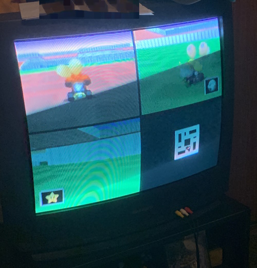
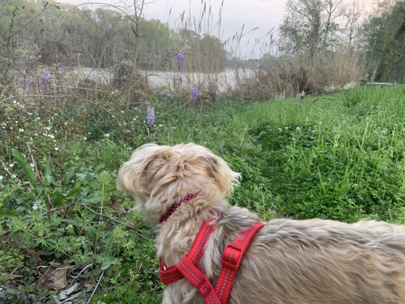

to be honest, i was *really* excited to start writing a journal entry, but it's nearly 3 am now and i have work tomorrow. i got really frustrated trying to set up this layout because i know another part has literally already done it on this exact same site but i didn't remember how to do it and kept messing up over and over and it kind of got me really irritated about inconsistencies due to Disorder. it started a big argument over nothing and it turns out i had just left an "overflow: hidden" tag on a page that needed to be set to auto and it was all my fault anyway and i was being kind of rude about it for nothing. having to look back at your own code you have little memory of writing and replicating it and still having it not work feels pretty bad, but you shouldn't redirect your frustration back at yourself for it... sorry...
i don't want this to be a negative entry though, because it's overall been an okay day. i'd say it was actually a pretty "good" day for once, though it's been kind of back and forth. i got a surprise visit from some irl friends and got to hang out with multiple people *in real life* **at my house** for the first time since like - god, before i dropped out? which was in like, 2014? 15? i know it's kind of "sad" to most people, but it really was a big deal to me. we only got to hang out for about 1.5-2 hours before they left, but they said they had a good time and would like to hang out some more. we played mario kart 64 and pokemon stadium 2 on my n64, though only with rental teams on the latter since i still need to buy a transfer pak. it made the experience funnier. we'll get to hang out some more this upcoming friday too, because we're going to see the new scream movie. i'm excited for that. oh, this all also inspired me to get my wii out and running again, and it's not bricked! yay! (though, i need a new HHD because i think i burnt up my old one in my childhood. oops!)
i also took my dog for a walk afterwards, and found a beautiful and super relaxing quiet spot in an empty lot near my house. it's along a fox-trail and we even found it's den. i wasn't been able to consistently go on walks like this for quite a few years once my chronic pain started to set in pretty severely. i started pain meds in november of 2022 that finally helped with this and it's been really nice being able to go out again. i still can't be as active as i used to, but this is fine enough for me.
to top everything off, i got to hang out with petscon (my closest friends) too, although i made a pretty dumb decision that ended up with me being pretty switchy. i feel like all i do is make bad decisions irt this but that's a whole other topic. the point is, regardless of the flubs, i can't complain about how the day went for once.
as for what i'm going to do with this blog, journal, whatever i'm calling it whenever, it's just whatever i want. i have a lot of things that multiple parts would want to talk about and that doesn't work as well for a format where journals are separated. there are also just times when i generally don't feel like stating whoever's writing at a specific moment, which is usually more common despite how overwhelming the other feeling sometimes is. i wanted to make a to-do list sort of for things that i'd been thinking about writing about so that i don't forget.
there's probably more that i can't remember, but writing is extremely hard for me; it's been an hour since i started the entry according to the time i wrote above. i haven't even put the photos in or uploaded this to neocities yet, so i'm going to do that and go to sleep.